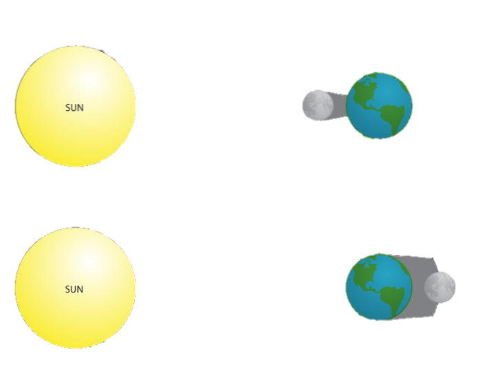

SOLAR ECLIPSE

A solar eclipse is a spectacular sight and a rare astronomical event. Each one is only visible from a limited area.
An eclipse of the Sun happens when the New Moon moves between the Sun and Earth, blocking out the Sun's rays and casting a shadow on parts of Earth.
Moon's shadow is not big enough to engulf the entire planet, so the shadow is always limited to a certain area (see map illustrations below). This area changes during the course of the eclipse because the Moon and Earth are in constant motion: Earth continuously rotates around its axis while it orbits the Sun, and the Moon orbits Earth. This is why solar eclipses seem to travel from one place to another.
Types of Solar Eclipses
There are 4 different types of solar eclipses. How much of the Sun's disk is eclipsed, the eclipse magnitude, depends on which part of the Moon's shadow falls on Earth.
- Partial solar eclipses occur when the Moon only partially obscures the Sun's disk and casts only its penumbra on Earth.
- Annular solar eclipses take place when the Moon's disk is not big enough to cover the entire disk of the Sun, and the Sun's outer edges remain visible to form a ring of fire in the sky. An annular eclipse of the Sun takes place when the Moon is near apogee, and the Moon's antumbra falls on Earth.
- Total solar eclipses happen when the Moon completely covers the Sun, and it can only take place when the Moon is near perigee, the point of the Moon's orbit closest to Earth. You can only see a total solar eclipse if you're in the path where the Moon casts its darkest shadow, the umbra.
- Hybrid Solar Eclipses also known as annular-total eclipses, are the rarest type. They occur when the same eclipse changes from an annular to a total solar eclipse, and/or vice versa, along the eclipse's path.
Upcoming 5 Solar Eclipses
| Date |
|
Type |
| 25 Oct 2022 |
: |
Solar Eclipse(Partial) |
| 20 Apr 2023 |
: |
Solar Eclipse(Total) |
| 14 Oct 2023 |
: |
Solar Eclipse(Annular) |
| 8 Apr 2024 |
: |
Solar Eclipse(Total) |
| 2 Oct 2024 |
: |
Solar Eclipse(Annular) |
LUNAR ECLIPSE
Lunar eclipses occur when Earth aligns between the Sun and the Moon and blocks the Sun's rays from directly reaching the Moon. The Moon does not have its own light. It shines because its surface reflects the Sun's rays. A lunar eclipse only happens during a full moon and can last as long as six hours, according to the European Space Agency (ESA).
Types of Solar Eclipses
There are three types of lunar eclipses depending on how the sun, Earth and moon are aligned at the time of the eclipse.
- Total lunar eclipse takes place when the Earth comes between the Sun and the Moon and its shadow covers the Moon. Eclipse watchers can see the Moon turn red when the eclipse reaches totality.
- Partial lunar eclipse happens when the Earth moves between the Sun and the Full Moon, but they are not precisely aligned. Only part of the Moon's visible surface moves into the dark part of the Earth's shadow.
- Penumbral lunar eclipse takes place when the Moon moves through the faint, outer part of Earth's shadow, the penumbra. This type of eclipse is not as dramatic as other types of lunar eclipses and is often mistaken for a regular Full Moon.
Upcoming 5 Lunar Eclipses
| Date |
|
Type |
| 7-8 Nov 2022 |
: |
Lunar Eclipse(Total) |
| 5-6 May 2023 |
: |
Lunar Eclipse(Penumbral) |
| 28-29 Oct 2023 |
: |
Lunar Eclipse(Partial) |
| 24-25 Mar 2024 |
: |
Lunar Eclipse(Penumbral) |
| 17-18 Sep 2024 |
: |
Lunar Eclipse(Partial) |